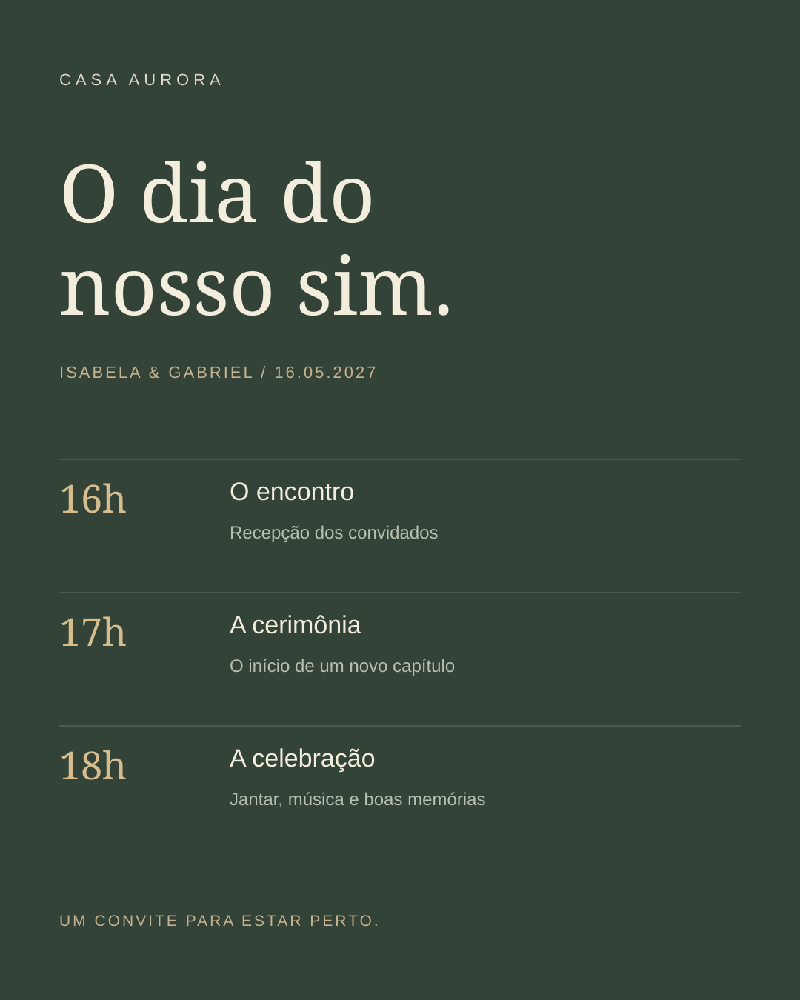

01 / ESTUDO CONCEITUAL
Casa Aurora
Uma celebração com linguagem editorial.
Criar um convite e organizar o dia de um casamento com a mesma identidade.
#293B31#F1EADC#BA9864
01 / DECISÃO VISUAL
O arco enquadra os nomes; o monograma e as folhas criam elementos que podem continuar em outras peças.
02 / SISTEMA
Verde profundo, papel e serifas de alto contraste dão unidade ao convite e à programação.
03 / ESCOPO
2 peças conceituais, com SVG editável e PNG. Estudo criado com apoio de IA; sem cliente, produção impressa ou resultados comerciais atribuídos.





Marcas, casais, eventos e preços são fictícios. As aplicações de papelaria e embalagem são representações digitais; não foram produzidas fisicamente.